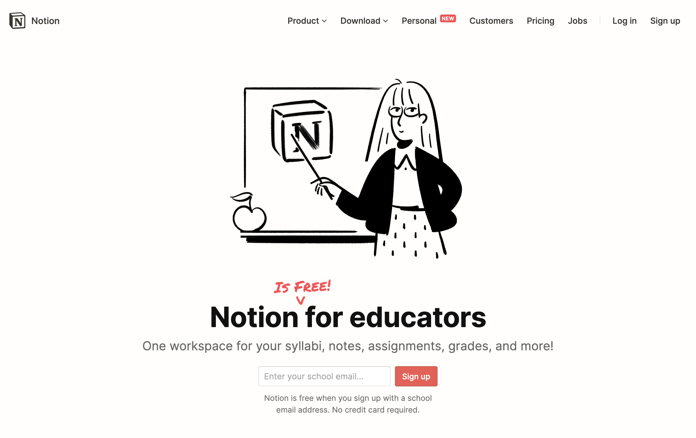
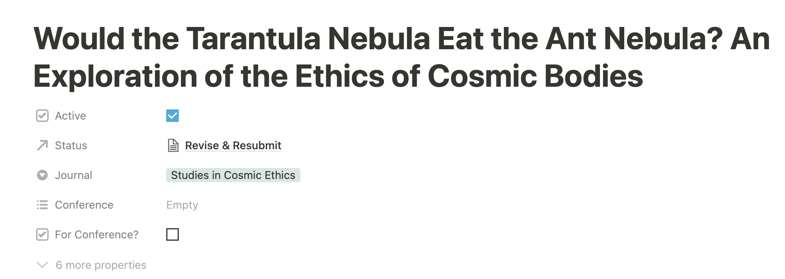
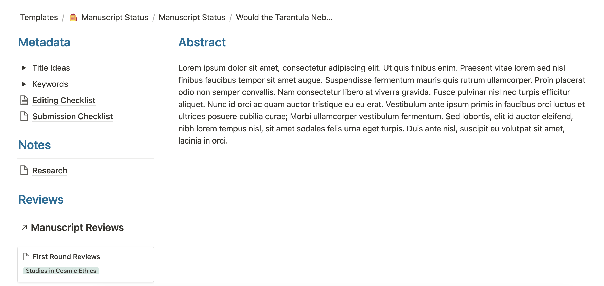
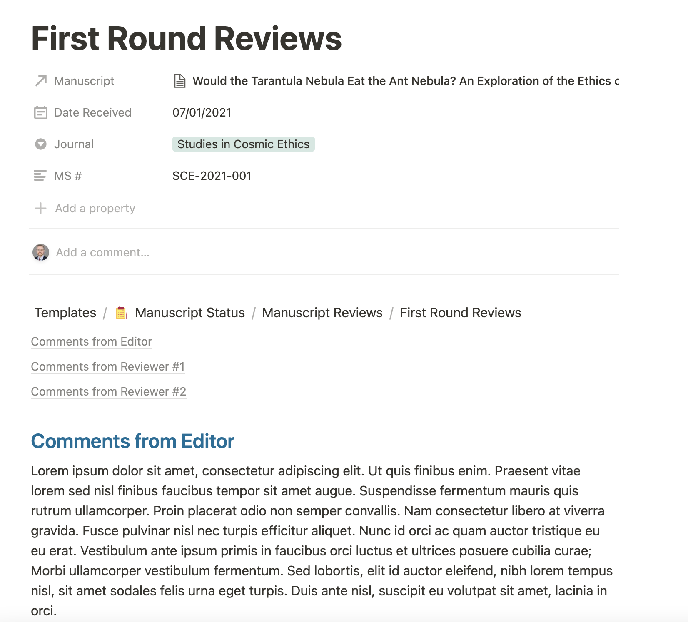
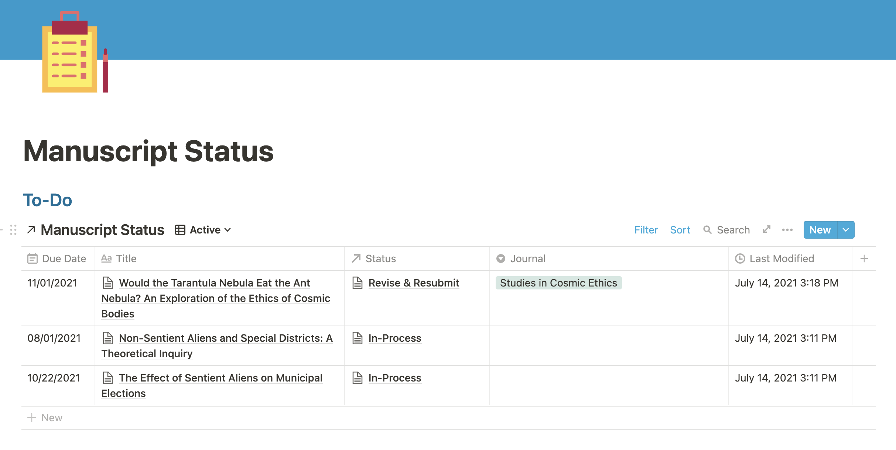
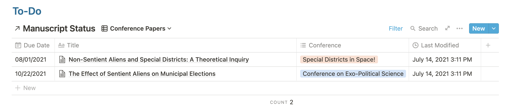
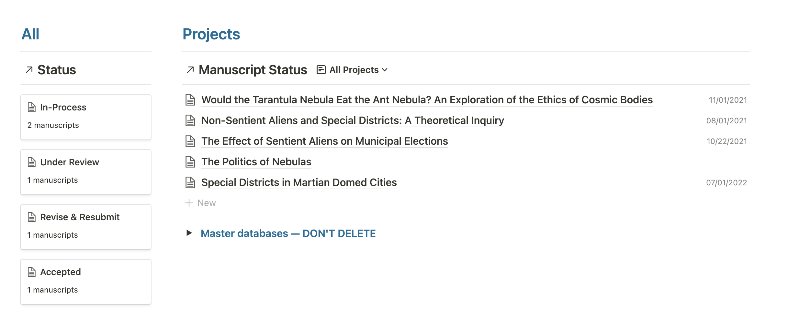
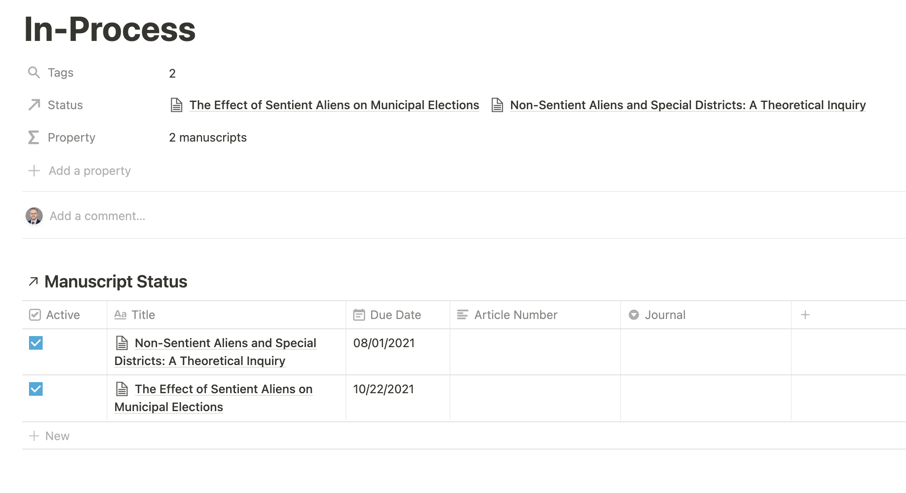

![]()
First, if you’re just here for the template, here you go, click ‘duplicate’ in the top right corner, sign in to Notion, and add it to your workspace. Bing, bang, done.
Let’s back up
For those of you who may not have read the original post.

Notion is free for educators. Just put in your .edu email address, and you’re good to go. Notion is mainly a holding area for all kinds of content, but one of its most potent tools is relational databases. We can link all sorts of data together to surface more helpful information about what we should be working on.
Main project database, reimagined
The original design of this was for a main project database. It included all kinds of information about projects, but it was mainly a spreadsheet at the end of the day. You could do similar things in nearly any spreadsheet program. The main project database still exists (named ‘Manuscript Status’) but is now linked to do additional databases for more functionality. Let’s jump right in.
The building blocks
As mentioned above, the primary component of this system is the Manuscript Status database. Each entry in this database represents a single manuscript and includes a lot of metadata on each project. We’ll use that metadata on the main page to surface helpful information, but it’s also beneficial in keeping track of all kinds of relevant information specific to each project.

As seen above, there are a few pieces of vital information (and many hidden details, click “6 more properties” to see it all). Is the project active? What is its status? This bit is linked to another database; I’ll explain more in a moment. What Journal is it current at or targeted for? Or what conference is it being submitted to?

Further down, this page includes all the relevant data about this manuscript. It consists of the abstract, some more metadata like information and checklists, notes about the project, and any reviewer/editor comments that might have come back. These comments are in their own database and linked, relationally, to this particular manuscript. Any comments related to this manuscript in the Manuscript Reviews database will show up in this section.

This portion can be highly customized. And it’s not too dissimilar to the original database. What is vastly different is how data is surfaced on the main page.
To-dos

A neat feature of Notion is you can display databases (a type of page) any number of times in multiple places. Each of these individual instances of a database can have its own views or methods of sorting, filtering, or otherwise displaying the data. These can be pretty powerful when used effectively!
The ‘To-Do’ panel at the top of the page is one such instance of a database (the Manuscript Status database). It shows active projects in one view (active = marked active and either in-process or R&R’ed), conference papers in another view, and overdue projects in a third view (those past their due dates). These views surface relevant items to work on—active projects requiring work, with near-term due dates.

More contextual information
Below the to-do section is a lot of contextual information.

On the left-hand side is the Status database, showing all manuscripts in the central database. If you click on one of the boxes, it will display all the relevant manuscripts in that category. It’s an easy way to surface all of the manuscripts at one time that meets specific status criteria.

The right-hand side lists all manuscripts in the Manuscript Status database and a view to show only published work (easy to find all in one place for annual reviews, tenure, etc.). Underneath that is where all the databases that make this entire system work live. The page is self-contained, though Notion will allow linking across heavily nested databases.
Templates
Throughout, there are templates for adding content. Need to add a new manuscript to the main database? Click on “new” in either instance of the Manuscript Status database on the front page and click “New Manuscript Template.” The manuscript page is pre-formatted – add your content—same thing for manuscript reviews. Just click “new,” then “review template,” and add the reviews. Remember to link the reviews back to the relevant manuscript. Rinse and repeat for status.
Wrapping up
I’m still bad at project management. These changes have helped me focus on what needs to be done. Hopefully, it’s helpful for you too.
Credits
All credit for the icons used here goes to smalllikeart on https://www.flaticon.com/, a free SVG icon site. Things like this help break up the monotony of a blank white page.